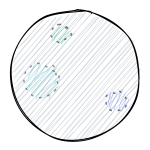
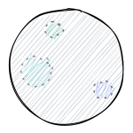

When? Where? What?
- The Solar System was formed 4.6 billion years ago from a cloud of gas and dust called the solar nebula. A shock wave from a nearby supernova (big star) explosion probably started it. The Sun formed in the center, and the planets formed around it.
- The Milky Way is a spiral galaxy, with curved arms of stars emanating from its center. The solar system is located in one of the smaller arms, called the Orion-Cygnus Arm, or simply the Orion Arm.
- The Milky Way is huge compared with the solar system. If the solar system were the size of your hand, the Milky Way would be as big as North America, according to NASA Jet Propulsion Laboratory's Night Sky Network.
- The Sun is at the center of the solar system and is its largest object, accounting for approximately 99.8% of the solar system's mass, according to the University of California, San Diego.
- Eight confirmed planets and many dwarf planets orbit the sun,according to NASA.
 
